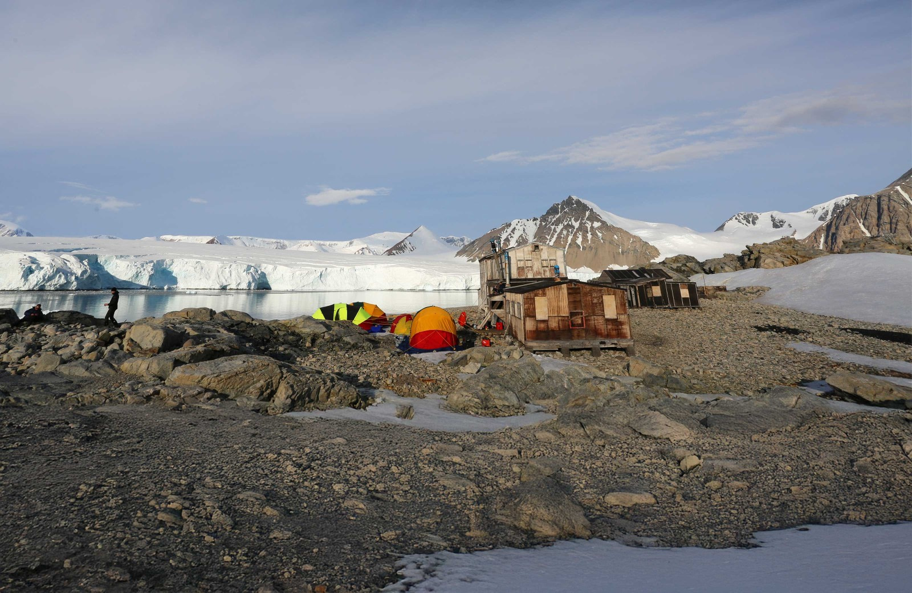

One approach to understanding these soils is to take a diverse and wide array of samp les from across all 28 ice-free regions and analyzing their geochemical properties in a lab

Antarctic Conservation Biogeographic Regions (ACBRs)

But sampling everywhere isn't realistic
The reality
For the entire continent, our lab has analyzed the geochemistry of only 171 samples in 4 regions
Ideal coverage would require thousands of samples from all 28 ACBR regions.
What we have is a mere fraction of that.

171 samples · 4 regions · 28 locations
NW Antarctic Peninsula
Transantarctic Mountains
South Victoria Land
North Victoria Land